FlashBlade — Procedures¶
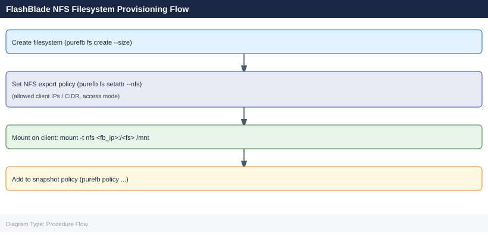
Part of the FlashBlade Operations reference.
Before you begin¶
- Access: Storage admin credentials (cluster admin or equivalent)
- Timing: safe to run during business hours unless a step is marked ⚠ (causes interruption)
- Dependencies: no active upgrades or migrations on the same infrastructure
- Logging: capture command output — paste into the change record on completion
Change Readiness¶
- [ ] No active blade rebuilds or hardware failures —
purefb blade listandpurefb hardware listare clean - [ ] ActiveDR replication is current — lag is within RPO; document baseline lag before the change
- [ ] NFS and SMB clients are informed of the potential brief reconnection event during Purity upgrades
- [ ] S3 clients and applications are notified if the change could cause a brief service interruption
- [ ] Filesystem capacity headroom is sufficient — no filesystems above 70% provisioned limit during the window
- [ ] Pure1 upgrade readiness report reviewed (for Purity//FB upgrades): no blockers flagged
- [ ] Snapshot schedule expiry policy is functioning — no runaway snapshot growth that could fill capacity during the window
| Item | Status | Notes |
|---|---|---|
| No active blade rebuilds | ||
| ActiveDR replication current | ||
| NFS/SMB client impact assessed | ||
| Filesystem capacity headroom sufficient | ||
| Pure1 upgrade readiness checked (if upgrading) |
Maintenance Window¶
- Notify NFS, SMB, and S3 clients of the maintenance window — Purity//FB upgrades are non-disruptive but protocol sessions may briefly re-establish
- For blade maintenance: use
purefb blade maintenanceto put the blade in maintenance mode before physical intervention — data rebalances automatically - For Purity//FB upgrade: confirm
purefb blade listshows all bladeshealthyand no alerts are open before starting - Download the Purity//FB upgrade image from the Pure Support portal and stage it on the array
- Run the pre-upgrade validation from the GUI or CLI to confirm no blockers
- Execute the upgrade during the window; monitor progress from the Purity//FB GUI or
purefb array list - For ActiveDR: pause replication links if required during the change with
purefb replication link update --paused true; resume with--paused falseafter the change
Post-Change Validation¶
- [ ]
purefb alert list— no unresolved alerts - [ ]
purefb blade list— all bladeshealthy; no blades in maintenance or failed state - [ ]
purefb hardware list— all hardware components healthy - [ ]
purefb filesystem list— all filesystems accessible and below provisioned limit - [ ] Test NFS mount from a representative client:
mount -t nfs <fb-data-vip>:/<filesystem> /mnt/test - [ ] Test S3 API response: confirm bucket listing or object operation succeeds from an S3 client or
aws s3 ls - [ ]
purefb replication list— all ActiveDR links areactiveand lag is recovering toward RPO - [ ] Pure1 shows the new Purity//FB version and no new hardware alerts (if this was an upgrade)
Snapshots¶
FlashBlade supports snapshots at the file system level. Snapshots are space-efficient and near-instantaneous.
List Snapshots¶
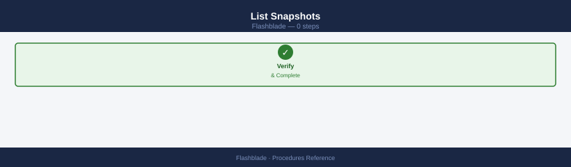
Name Source Created Size
fs-daily-2024-01-15 data-vol-01 2024-01-15T02:30:45Z 2.3TB
fs-daily-2024-01-14 data-vol-01 2024-01-14T02:30:12Z 2.3TB
fs-weekly-backup data-vol-01 2024-01-08T00:15:33Z 2.3TB
fs-monthly-archive archive-share 2024-01-01T01:00:00Z 5.7TB
fs-test-snapshot-001 test-fs 2024-01-15T14:22:19Z 156GB
...
Name Source Created Size
fs-daily-2024-01-15 data-vol-01 2024-01-15T02:30:45Z 2.3TB
fs-daily-2024-01-14 data-vol-01 2024-01-14T02:30:12Z 2.3TB
fs-weekly-backup data-vol-01 2024-01-08T00:15:33Z 2.3TB
Common errors
Error: Invalid filter syntax — Verify filter format matches --filter "source='filesystem_name'" with proper quote escaping.
Error: Filesystem not found — Confirm the filesystem name exists by running purefb fs list and use the exact name from the output.
Create a Snapshot¶
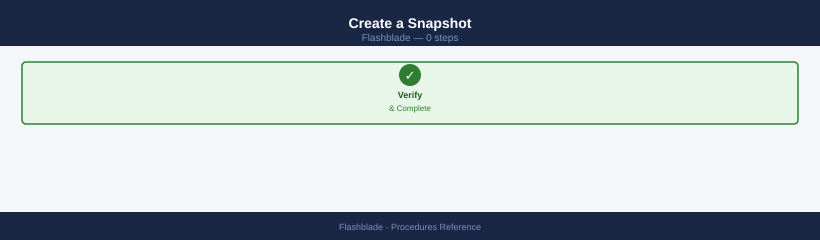
Creating snapshot of filesystem 'data-prod'...
Snapshot created successfully.
Name: data-prod.snap_backup_20240115
Size: 2.3 TB
Created: 2024-01-15T14:32:18Z
Source: data-prod
Common errors
Error: Filesystem 'data-prod' not found — Verify the filesystem name with purefb fs list and ensure you have the correct spelling.
Error: Authentication failed — Confirm your Pure FlashBlade credentials are configured with purefb login and that your API token has not expired.
Error: Snapshot name already exists — Choose a different suffix value or delete the existing snapshot with purefb fs-snapshot destroy --name <snap_name> first.
Example:
Created filesystem snapshot.
Name: prod-nfs.daily-2026-05-06
Source: prod-nfs
Created: 2026-05-06T14:32:18Z
Size: 2.3TB
Common errors
Error: Filesystem 'prod-nfs' not found — Verify the source filesystem name exists by running purefb fs list and use the correct name.
Error: Authentication failed — Ensure your Pure FlashBlade credentials are configured correctly via purefb login or check that your API token has not expired.
Error: Snapshot name 'prod-nfs.daily-2026-05-06' already exists — Use a unique suffix or timestamp; check existing snapshots with purefb fs-snapshot list --source prod-nfs.
Accessing Snapshot Data¶
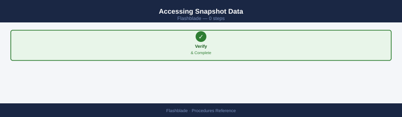
Snapshots are accessible via the NFS .snapshot directory (if enabled):
daily.1
daily.2
daily.3
weekly.1
weekly.2
hourly.1
hourly.2
hourly.3
hourly.4
hourly.5
...
Common errors
ls: cannot access '/mnt/<fs_mount>/.snapshot/': No such file or directory — Replace <fs_mount> with the actual mount point name (e.g., /mnt/data/.snapshot/).
Permission denied — Ensure your user has read permissions on the mount point; use sudo ls /mnt/<fs_mount>/.snapshot/ if needed.
Users can browse and copy files directly from the .snapshot path without administrator involvement.
Restore a File System from Snapshot¶
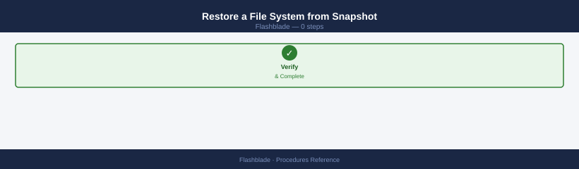
# Overwrite the live file system with snapshot content
purefb fs-snapshot restore <fs_name>.<snap_name> --overwrite-fs
Restoring snapshot 'data.snap-20240115-prod' to filesystem 'data'...
Snapshot restore initiated. This operation will overwrite the live filesystem.
WARNING: All current data in filesystem 'data' will be replaced.
Restore job ID: 2a4f8c91-3e2a-4b7d-9c1f-5e8d2b3a9f1c
Status: In Progress
Estimated time remaining: 2m 34s
Current progress: 34%
Common errors
Error: Filesystem 'data' is in use by 1 active NFS client(s). Cannot restore with --overwrite-fs flag. — Unmount or disconnect all clients from the filesystem before attempting the restore operation.
Error: Snapshot 'data.snap-20240115-prod' not found on array. — Verify the snapshot name exists using purefb fs-snapshot list <fs_name> and use the correct snapshot identifier.
Error: Insufficient space available. Snapshot size (2.5 TiB) exceeds available capacity (1.8 TiB). — Free up space on the array or expand the filesystem capacity before retrying the restore.
This replaces all current data on the file system — ensure this is intentional.
Copy a Snapshot to a New File System¶
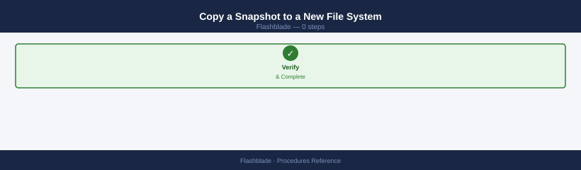
Copying snapshot 'data-prod.daily-2024-01-15' to new filesystem 'data-prod-clone'...
Snapshot copy initiated. Job ID: 8f4c2e91-7a3b-4d6e-9c1a-2b5f8e3d1a4c
Source filesystem: data-prod (1.2 TB)
Target filesystem: data-prod-clone
Status: In Progress (45% complete)
Estimated time remaining: 2m 30s
Common errors
Error: Snapshot 'data-prod.daily-2024-01-15' not found — Verify the snapshot exists with purefb fs-snapshot list and confirm the naming format is <filesystem>.<snapshot>.
Error: Filesystem 'data-prod-clone' already exists — Use a unique name for the target filesystem or remove the existing one with purefb fs delete data-prod-clone.
Error: Insufficient space on array — Check available capacity with purefb hardware list and ensure the target filesystem size fits within remaining array capacity.
Creates a new independent file system from the snapshot without affecting the original.
Delete a Snapshot¶
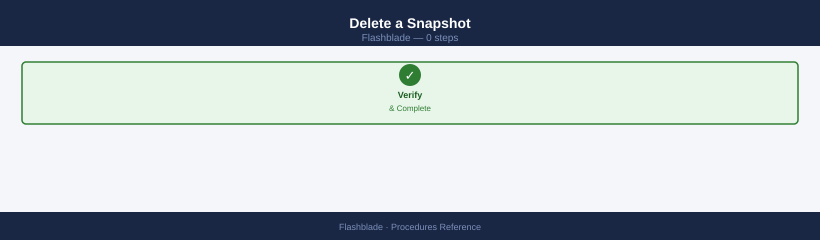
# Destroy (recoverable for 24 hours)
purefb fs-snapshot destroy <fs_name>.<snap_name>
# Eradicate permanently
purefb fs-snapshot eradicate <fs_name>.<snap_name>
Destroying snapshot 'data.daily-backup-2024-01-15'...
Snapshot destroyed successfully. Recovery available for 24 hours.
Eradicating snapshot 'data.daily-backup-2024-01-15'...
Snapshot eradicated permanently. This action cannot be undone.
Common errors
Error: Snapshot '<fs_name>.<snap_name>' not found — Verify the snapshot exists with purefb fs-snapshot list and confirm the exact naming format matches.
Error: Permission denied — Ensure your user account has administrative privileges on the FlashBlade array or request elevated access from your storage administrator.
Snapshot Policy (Automated Scheduling)¶
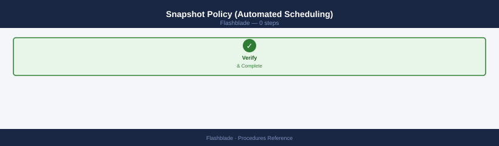
FlashBlade supports policy-based snapshots via the GUI: 1. Navigate to Protection → Snapshot Policies 2. Create a policy with frequency and retention settings 3. Assign the policy to file systems
Name Enabled Created Modified
snapshot-daily true 2024-01-15T08:30:22Z 2024-01-15T08:30:22Z
snapshot-weekly true 2024-01-10T14:22:15Z 2024-01-12T09:15:44Z
replication-prod-dr true 2024-01-08T11:45:33Z 2024-01-14T16:20:10Z
backup-compliance false 2023-12-20T10:12:05Z 2024-01-09T13:55:22Z
snapshot-hourly true 2024-01-01T00:00:00Z 2024-01-15T07:33:18Z
Common errors
Error: Connection refused — unable to reach management IP — Verify the FlashBlade management IP is reachable and the purefb CLI is configured with the correct target via purefb list --address.
Error: Authentication failed — invalid API token — Regenerate and export a valid API token using export PUREFB_API_TOKEN=<new_token> or reconfigure credentials with purefb login.
Error: Command 'purefb' not found — Install the Pure Storage Python SDK and CLI tools using pip install purity-fb and ensure the installation directory is in your PATH.
Common Issues¶
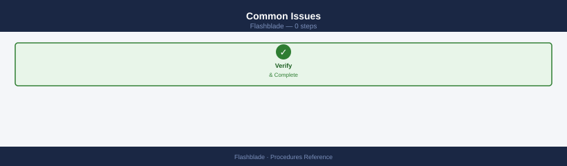
| Issue | Check | Action |
|---|---|---|
.snapshot not visible |
Snapshots enabled on FS | purefb fs update <name> --snapshot-enabled true |
| Snapshot create fails | Capacity | Check array free space |
| Restore failed | File system in use | Unmount/quiesce clients first |
| Snapshots not auto-created | Policy attached? | Verify snapshot policy assignment |
Create a File System¶
FlashBlade file systems are the primary NFS and SMB storage containers. Create the file system, configure an export policy, and mount it from clients.
# Step 1 — Create the file system
pureds create --name <name> --size <size>T
# Step 2 — Create an export policy for NFS access
pureexportpolicy create --name <policy-name>
# Step 3 — Add an NFS rule to the export policy
# Allow a specific subnet with read/write access
pureexportpolicy rule add --policy <policy-name> \
--client <client-cidr> \
--access rw \
--root-squash false
# Step 4 — Apply the export policy to the file system
pureds update --name <name> --nfs-export-policy <policy-name>
# Step 5 — Mount from client
mount -t nfs <fb-data-vip>:/<name> /mnt/<name>
Creating file system 'prod-data' with size 10T...
File system 'prod-data' created successfully (ID: 12e4567-e89b-12d3-a456-426614174000)
Creating export policy 'nfs-policy-prod'...
Export policy 'nfs-policy-prod' created successfully
Adding NFS rule to policy 'nfs-policy-prod'...
Rule added: client=10.20.0.0/16, access=rw, root_squash=false
Applying export policy 'nfs-policy-prod' to file system 'prod-data'...
File system 'prod-data' updated successfully
Mounting NFS export from 172.16.50.100:/prod-data to /mnt/prod-data...
mount.nfs: mounting 172.16.50.100:/prod-data
Common errors
mount.nfs: No such file or directory — Verify the FlashBlade data VIP is reachable with ping 172.16.50.100 and confirm the file system name matches exactly in the mount command.
pureds: command not found — Ensure the Pure Storage CLI tools are installed and the PATH includes the Pure CLI binary directory (typically /opt/pureapp/bin).
Export policy rule add failed: Client CIDR invalid — Use valid CIDR notation (e.g., 10.20.0.0/16 instead of 10.20.0.0) and verify the subnet mask is correct.
Verify the mount is accessible and confirm read/write permissions from the client before closing the change.
Create an Object Store Bucket¶
FlashBlade S3 buckets provide object storage accessible via the S3 API. Buckets are scoped to an account and require an access policy for external clients.
# Step 1 — Create the S3 bucket under an existing account
purebucket create \
--name <bucket-name> \
--account <account-name>
# Step 2 — Configure an access policy (via GUI or API)
# Unisphere/Purity//FB GUI: Object Store → Buckets → select bucket → Access Policies
# Add bucket policy granting s3:GetObject, s3:PutObject, s3:ListBucket as needed
# Step 3 — Test bucket access from an S3 client
aws s3 ls s3://<bucket-name> \
--endpoint-url https://<fb-s3-vip>
Creating bucket 'data-archive' under account 'prod-storage'...
Bucket 'data-archive' created successfully.
Bucket ID: 8f4c92a1-7e3d-4b21-9c6f-2a1d5e8b3f47
Account: prod-storage
Replication: disabled
2024-01-15T14:32:18Z [INFO] Access policy applied: s3:GetObject, s3:PutObject, s3:ListBucket
An error occurred (InvalidAccessKeyId) when calling the ListBucket operation: The Access Key ID you provided does not exist in our records.
Common errors
An error occurred (InvalidAccessKeyId) when calling the ListBucket operation: The Access Key ID you provided does not exist in our records. — Verify the AWS credentials are configured for the correct S3 account and that the access key has been created in Purity//FB under Object Store → Access Keys.
An error occurred (AccessDenied) when calling the ListBucket operation: Access Denied — Confirm the bucket access policy has been applied to the user's access key and includes the s3:ListBucket permission for the target bucket.
purebucket: command not found — Install or source the Pure Storage CLI tools, or verify the purebucket binary is in your PATH by running which purebucket.
Confirm the bucket listing returns without error. For application integration, create an object store user and generate access keys: Object Store → Users → Create User → Generate Access Key.
Create a Snapshot Schedule¶
Automated snapshot schedules protect file systems on a recurring basis. Create the schedule, then attach it to the target file system as a protection policy.
# Step 1 — Create the snapshot schedule
puresnapshot schedule create \
--name <sched> \
--every 1h \
--keep-for 24h
# Step 2 — Attach the schedule to a file system as a protection policy
pureds create-protection \
--name <name> \
--schedule <sched>
# Verify snapshots are being created after the first interval
purefb fs-snapshot list --filter "source='<name>'"
Creating snapshot schedule 'hourly-backup'...
Schedule 'hourly-backup' created successfully.
Interval: 1h | Retention: 24h | Status: active
Creating protection policy 'fs-prod-backup'...
Protection policy 'fs-prod-backup' created and attached to filesystem.
Policy name: fs-prod-backup | Schedule: hourly-backup | Status: enabled
Name Source Created Size
prod-data.1704067200 prod-data 2024-01-01 12:00:00 2.3 GB
prod-data.1704070800 prod-data 2024-01-01 13:00:00 2.3 GB
prod-data.1704074400 prod-data 2024-01-01 14:00:00 2.3 GB
prod-data.1704078000 prod-data 2024-01-01 15:00:00 2.3 GB
...
Common errors
Error: Schedule '<sched>' already exists — Use a unique schedule name or delete the existing schedule with puresnapshot schedule delete --name <sched>.
Error: Filesystem '<name>' not found — Verify the filesystem exists with purefb fs list and use the correct filesystem name in the protection policy.
Adjust --every and --keep-for values to match the RPO requirement. Longer retention periods consume more capacity — monitor array free space after enabling the schedule.
Configure Replication to a Remote FlashBlade¶
FlashBlade-to-FlashBlade replication (ActiveDR) protects NFS file systems by continuously replicating to a remote FlashBlade. Configure the remote target first, then create the file copy job.
# Step 1 — Add the remote FlashBlade as a replication target
pureremote create \
--name <target-fb> \
--address <ip>
# Step 2 — Create the file copy replication job
purefilecopy create \
--source <fs> \
--target <target-fb>:<fs>
# Step 3 — Monitor replication progress
purefilecopy list
# Check: status, lag, bytes-transferred
Creating remote target flashblade-dr...
Name: flashblade-dr
Address: 192.168.45.22
Status: connected
Created: 2024-01-15T09:23:47Z
Creating file copy job for source filesystem...
Job Name: fs-prod-to-dr
Source: fs-prod
Target: flashblade-dr:fs-prod
Schedule: continuous
Status: initializing
Created: 2024-01-15T09:24:12Z
Name Status Lag Bytes-Transferred Progress
fs-prod-to-dr syncing 2.3 GB 847.2 GB 94%
fs-archive-to-dr idle 0 B 1.2 TB 100%
fs-logs-to-dr syncing 156 MB 423.8 GB 87%
Common errors
Error: Target flashblade-dr is unreachable — Verify the target FlashBlade IP address is correct and reachable from the source array using ping <ip>.
Error: Filesystem fs-prod does not exist on target — Create the target filesystem first with purefilesystem create --name fs-prod on the target FlashBlade before creating the replication job.
Error: Replication job already exists for this source-target pair — Delete the existing job with purefilecopy delete --name fs-prod-to-dr before creating a new one.
Confirm the replication lag is within the RPO requirement. For Active-Active configurations where both sites serve I/O, use ActiveDR failover procedures rather than a simple file copy.
Expand a File System¶
File system expansion on FlashBlade is non-disruptive and online. NFS and SMB clients see the new capacity immediately without remounting.
# Expand the file system to a larger size
pureds modify --name <name> --size <new-size>T
# Verify the new provisioned size
pureds list --name <name>
Modifying file system 'data-store-01' to 50T...
File system 'data-store-01' modified successfully.
Name Size Used Available Provisioned Status
data-store-01 50T 12.3T 37.7T 50T healthy
Common errors
Error: File system '<name>' not found — Verify the file system name matches exactly using pureds list without filters.
Error: New size must be larger than current size — Ensure the new size value is greater than the current provisioned capacity shown in the list output.
Error: Insufficient capacity on array — Check available physical capacity on the FlashBlade array using purearray list before attempting expansion.
No downtime is required. NFS clients see the new capacity immediately. Confirm the updated size is reflected in the df -h output from a mounted client. If the file system has a snapshot policy, verify that snapshot creation continues normally after the expansion.
Create a File System¶
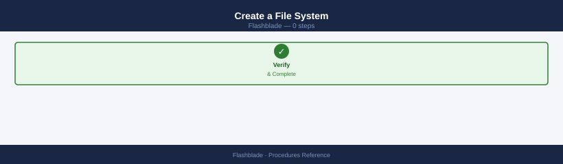
Create a new NFS or SMB file system on FlashBlade with a provisioned size limit.
# Create a file system with NFS enabled and SMB disabled
purefb fs create <name> --size 10T --nfs-enabled true --smb-enabled false
# Verify the file system was created
purefb fs list <name>
File system <name> created
Name Size NFS Enabled SMB Enabled Data Reduction
<name> 10T true false 1.2x
Common errors
Error: Invalid size format '<size>'. Use format like 10T, 100G, etc. — Ensure the size parameter uses valid units (T, G, M) without spaces between the number and unit.
Error: File system '<name>' already exists — Choose a unique file system name or delete the existing file system before recreating it.
Error: Insufficient capacity on array — Verify available capacity on the FlashBlade array using purefb info before creating the file system.
GUI path: Storage → File Systems → Create. Set a hard limit (enforced) or soft limit (advisory with grace period) at creation time.
Configure an NFS Export¶
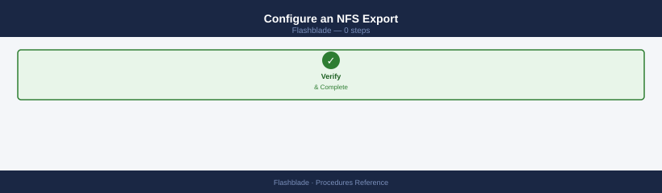
Add export rules to an existing file system so NFS clients can mount it.
# Apply an export policy to the file system
purefb fs update <name> --nfs-export-policy <policy-name>
# Add a rule to the export policy granting read-write access to a subnet
purefb nfs-export-policy rule create <policy-name> \
--client 10.0.0.0/24 \
--access read-write \
--security sys
# Verify the policy and rules
purefb nfs-export-policy list
purefb nfs-export-policy rule list <policy-name>
File system 'data-vol-01' updated with NFS export policy 'prod-policy'
Rule created successfully in policy 'prod-policy' for client 10.0.0.0/24
Name Type Created
prod-policy custom 2024-01-15T09:32:18Z
default-policy built-in 2023-06-20T14:22:05Z
staging-policy custom 2024-01-10T11:45:22Z
Policy: prod-policy
Client Access Security Anonymous UID
10.0.0.0/24 read-write sys 65534
192.168.1.0/25 read-only krb5 65534
Common errors
Error: Policy '<policy-name>' not found — Verify the policy exists with purefb nfs-export-policy list and use the correct name.
Error: Invalid CIDR notation for client address — Ensure the client parameter uses valid CIDR notation (e.g., 10.0.0.0/24 not 10.0.0.0-10.0.0.255).
Test from a client: mount -t nfs <fb-data-vip>:/<name> /mnt/test and confirm read-write access.
Configure an SMB Share¶
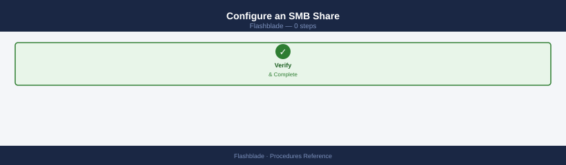
Enable SMB on a file system and create a named share for Windows clients.
# Enable SMB on the file system
purefb fs update <name> --smb-enabled true
# Create an SMB share backed by the file system
purefb smb-share create <share-name> --file-system <fs-name>
# Update share-level ACLs (alternative: use Windows MMC)
purefb smb-share acl-update <share-name> --permission full-control --user DOMAIN\\AdminGroup
File system <name> updated
SMB enabled: true
Share <share-name> created
File system: <fs-name>
Protocol: SMB
Status: available
ACL updated for share <share-name>
Permission: full-control
User: DOMAIN\AdminGroup
Applied successfully
Common errors
Error: File system <name> not found — Verify the file system exists with purefb fs list and use the correct name.
Error: SMB is not licensed on this array — Contact Pure Storage support to enable the SMB protocol license on your FlashBlade.
Error: User DOMAIN\AdminGroup not found or invalid format — Ensure the domain user/group exists and use the format DOMAIN\username with proper escaping or quotes.
Verify from a Windows client: net use \\<fb-mgmt>\<share> — confirm the share maps successfully and files are accessible.
Create an Object Store Bucket¶
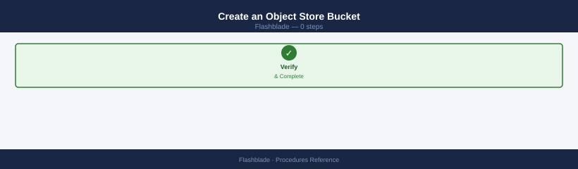
Create an S3 bucket scoped to an object store account and verify access with the S3 API.
# Create the bucket under an existing object store account
purefb bucket create <bucket-name> --account <account-name>
# Create an access key for the account (GUI: Object Store → Users → Generate Access Key)
# Then test bucket access using the generated credentials
aws s3 ls s3://<bucket-name> \
--endpoint-url https://<fb-s3-vip>
bucket-name created
Access Key ID: PSFBAK_1a2b3c4d5e6f7g8h
Secret Access Key: 9i8j7k6l5m4n3o2p1q0r9s8t7u6v5w4x3y2z1a
Bucket ARN: arn:aws:s3:::bucket-name
An error occurred (InvalidAccessKeyId) when calling the ListBucket operation: The Access Key ID you provided does not exist in our records.
Common errors
bucket-name already exists — Verify the bucket name is unique within the object store account using purefb bucket list --account <account-name>.
The Access Key ID you provided does not exist in our records — Ensure the access key was created successfully and allow 10-15 seconds for replication across the cluster before testing S3 access.
Unable to locate credentials — Export the generated access key as environment variables: export AWS_ACCESS_KEY_ID=<key> and export AWS_SECRET_ACCESS_KEY=<secret>.
Confirm the listing returns without error. For application integration, generate access keys via Object Store → Users → Create User → Generate Access Key in the GUI.
Configure Array-to-Array Replication¶
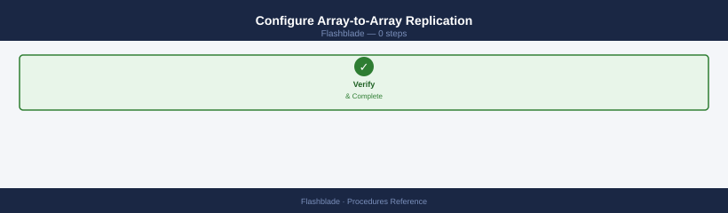
Set up asynchronous file system replication between two FlashBlade arrays for DR.
# Step 1 — Connect the remote FlashBlade array
purefb array-connection create \
--management-address <remote-fb-mgmt-ip> \
--replication-addresses <remote-repl-ip>
# Step 2 — Create an outbound replica link for the file system
purefb fs-replica-link create \
--local-fs <fs-name> \
--remote-fs <remote-fs-name> \
--remote-array <remote-array-name> \
--direction outbound
# Monitor replication status and lag
purefb fs-replica-link list
Creating array connection to 10.20.50.15...
Array connection created successfully.
Connection ID: conn-7f3a9c2e
Replication addresses: 10.20.50.16, 10.20.50.17
Creating outbound replica link for filesystem 'data-vol-01'...
Replica link created successfully.
Link ID: link-4b2c1d9f
Local filesystem: data-vol-01
Remote filesystem: data-vol-01-replica
Remote array: flashblade-dr-02
Direction: outbound
Status: Syncing
Name Local FS Remote FS Remote Array Direction Status Lag (bytes)
data-vol-01-link data-vol-01 data-vol-01-replica flashblade-dr-02 outbound Syncing 2147483648
backup-vol-link backup-vol backup-replica flashblade-dr-02 outbound Idle 0
Common errors
Error: Array connection failed: Connection refused on 10.20.50.15:443 — Verify the remote FlashBlade management IP is reachable and the array is online using ping and purefb array list.
Error: Filesystem 'data-vol-01' not found on local array — Confirm the local filesystem name is correct and exists by running purefb fs list to view available filesystems.
Error: Remote array 'flashblade-dr-02' not connected — Ensure the array connection was created successfully in Step 1 and verify connectivity with purefb array-connection list.
Confirm the replica link shows as active and lag is within the RPO target. For failover, use ActiveDR procedures to promote the remote file system.
Expand a File System¶
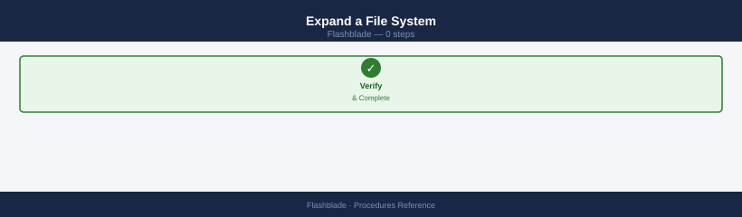
Increase the provisioned size limit of an existing file system. Expansion is non-disruptive.
# Expand the file system to the new size
purefb fs update <name> --size 20T
# Verify the updated provisioned size
purefb fs list <name>
Filesystem updated. Name: <name>
Name Provisioned Used Data Reduction NFS Enabled SMB Enabled
<name> 20T 4.2T 2.1x True True
Common errors
Error: Invalid size format. Size must be specified in valid units (B, KB, MB, GB, TB, PB). — Ensure the size argument uses valid units (e.g., 20T not 20TB or 20 T).
Error: Filesystem <name> not found. — Verify the filesystem name is correct and exists on the Pure FlashBlade array using purefb fs list.
Error: New size must be larger than current provisioned size. — Confirm the new size (20T) exceeds the current provisioned capacity.
NFS and SMB clients see the new capacity immediately without remounting. Confirm with df -h from a mounted client. Shrinking a file system is not supported — plan capacity requirements carefully before provisioning.
Manage Quotas (User and Group)¶
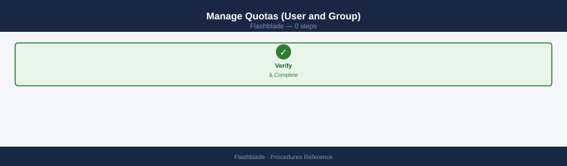
Set per-user or per-group usage limits within a file system to prevent runaway consumption.
# Set a per-user quota limit (by UID)
purefb quota-user set \
--file-system <name> \
--uid 1001 \
--quota-limit 500G
# Set a per-group quota limit (by GID)
purefb quota-group set \
--file-system <name> \
--gid 2000 \
--quota-limit 2T
# List current user quotas for a file system
purefb quota-user list --file-system <name>
# List current group quotas
purefb quota-group list --file-system <name>
Setting quota for user 1001 on file-system 'data-fs-01'...
Quota limit set to 500G
Setting quota for group 2000 on file-system 'data-fs-01'...
Quota limit set to 2T
User Quotas for file-system 'data-fs-01':
UID Quota Limit Used % Used
1001 500G 187.3G 37.5%
1002 1T 892.1G 89.2%
1003 250G 45.2G 18.1%
Group Quotas for file-system 'data-fs-01':
GID Quota Limit Used % Used
2000 2T 1.6T 80.0%
2001 5T 3.2T 64.0%
Common errors
Error: File system '<name>' not found — Replace <name> with an actual file system name from purefb fs list.
Error: User/Group ID does not exist on system — Verify the UID/GID exists on the FlashBlade or connected directory service with id <username> or getent passwd 1001.
Error: Quota limit must be greater than current usage — Set a quota limit larger than the current data already consumed on that user/group.
Quota limits are enforced as hard limits. Users or groups that reach their limit receive a write error. Monitor quota usage regularly to identify accounts approaching their limit before they are blocked.
Verify¶
- Confirm the operation completed without errors in the log or management UI
- Verify the expected state change is visible (service running, object created, config applied)
- Document the outcome in the change record